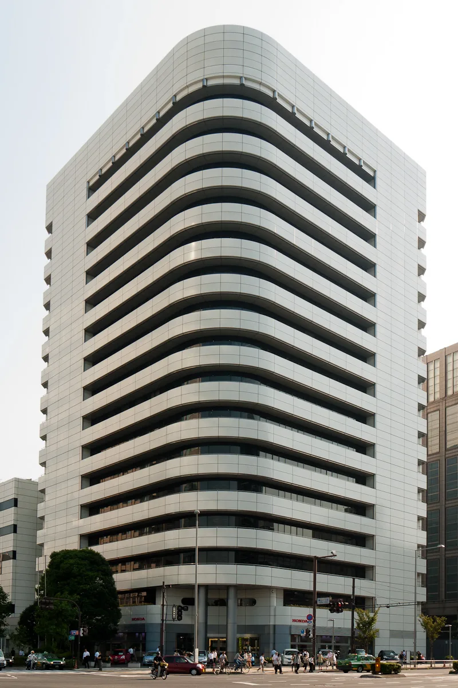
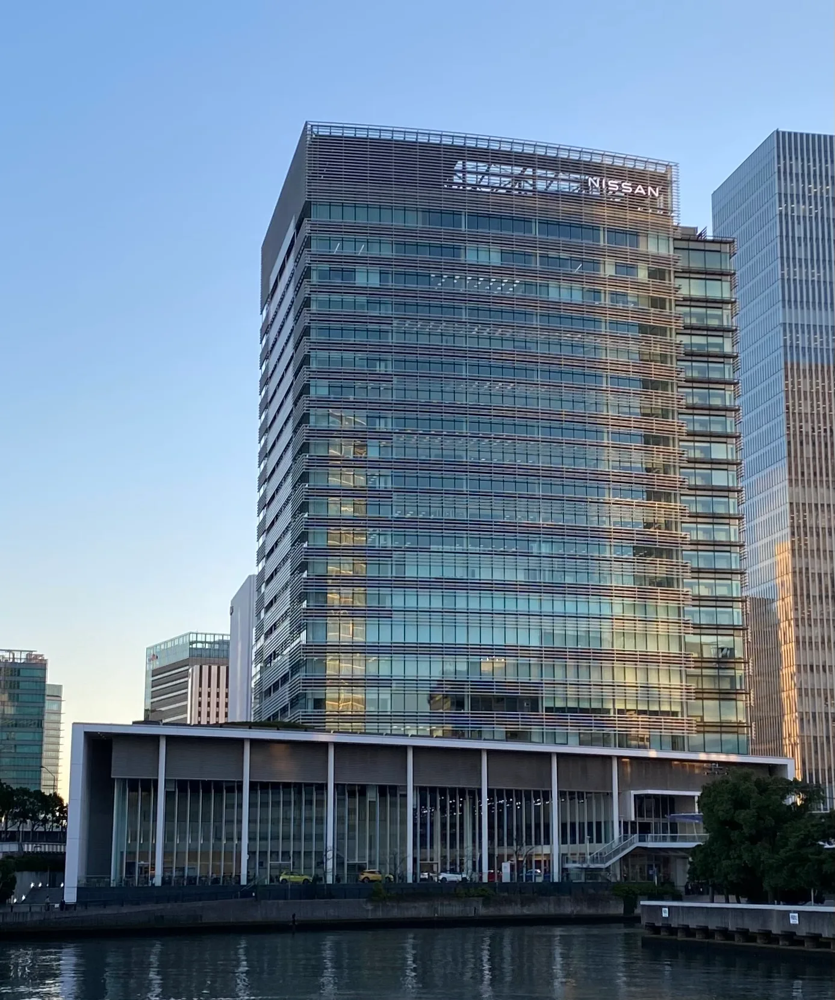

▲ 혼다 아오야마 본사. 혼다와 닛산은 2026년 8월 공동 지주회사를 설립했다 ⓒ Wikimedia Commons (CC BY-SA 3.0)
혼다와 닛산이 2026년 8월, 공동 지주회사를 공식 설립했다. 두 회사의 브랜드는 그대로 유지되지만, 지주사 아래에서 전략과 개발 방향을 조율하는 새로운 지배구조가 만들어졌다. 두 회사의 지난해 판매량을 단순 합산하면 735만 대로, 현대차그룹의 700만 대대 판매 규모를 넘어서는 수치가 된다.
1. 지주사 체제 — 브랜드는 유지, 컨트롤타워만 통합

▲ 닛산 요코하마 본사. 지주회사 체제에서도 닛산 브랜드는 독립적으로 운영된다 ⓒ Wikimedia Commons (CC BY-SA 4.0)
이번 통합은 완전한 흡수합병이 아니라 지주회사(홀딩컴퍼니) 체제다. 혼다와 닛산은 각자의 브랜드와 딜러망, 제품 라인업을 그대로 유지하면서 지주사를 통해 전략적 의사결정과 대규모 투자 방향만 조율한다. 지주사의 사장직과 이사회 구성은 대부분 혼다 쪽 인사가 맡는 것으로 알려졌다.
2. 735만 대 — 현대차그룹을 넘어서는 숫자
▲ 닛산 글로벌 본사 전경. 혼다·닛산 합산 판매량은 735만 대로 현대차그룹 판매 규모를 웃돈다 ⓒ Wikimedia Commons (CC BY-SA 4.0)
혼다의 지난해 자동차 판매량은 398만 대, 닛산은 337만 대였다. 두 숫자를 단순히 더하면 735만 대가 된다. 현대차그룹의 연간 판매 규모가 700만 대 초중반대인 점을 감안하면, 이번 통합으로 두 일본 브랜드가 판매량 기준으로 현대차그룹을 넘어서는 완성차 연합체가 만들어진 셈이다. 다만 판매량 합산이 곧바로 시장 지배력이나 수익성 향상으로 이어지는 것은 아니라는 점은 유의할 부분이다.
3. 다음 단계 — ECU 공동 개발

▲ 혼다 어코드. 혼다와 닛산은 파워트레인·ADAS 통합 제어 ECU를 공동 개발할 계획이다 ⓒ 혼다
지주사 설립과 별개로, 두 회사는 실무 차원의 협력도 구체화하고 있다. 차량의 동력계와 안전장비, 첨단 운전자 보조 시스템(ADAS)을 통합 제어하는 ECU(전자제어장치) 공동 개발 계약을 수 주 내 마무리할 예정이다. 이는 전동화·소프트웨어 정의 차량(SDV) 전환 과정에서 개발비 부담을 나눠지겠다는 실질적인 협업 시도로 풀이된다.
4. 왜 지금 손을 잡았나
혼다와 닛산이 통합을 추진한 배경에는 전동화 전환 비용 부담과 중국 시장에서의 경쟁력 약화가 자리한다. 두 회사 모두 단독으로는 배터리·소프트웨어 투자를 감당하기 벅찬 상황에서, 규모의 경제를 통해 개발비를 분산하고 구매·생산 효율을 높이려는 목적이 크다. 다만 서로 다른 기업 문화와 제품 전략을 가진 두 회사가 실제로 얼마나 시너지를 낼 수 있을지는 앞으로 지켜봐야 할 부분이다.
5. 정리
체크포인트
- 혼다와 닛산은 2026년 8월 공동 지주회사를 공식 출범시켰다.
- 두 브랜드는 독립 운영을 유지하며, 지주사 리더십은 혼다 측이 주도한다.
- 합산 판매량 735만 대로 현대차그룹 규모를 넘어선다.
- 파워트레인·ADAS 통합 ECU 공동 개발이 다음 협력 과제로 진행 중이다.